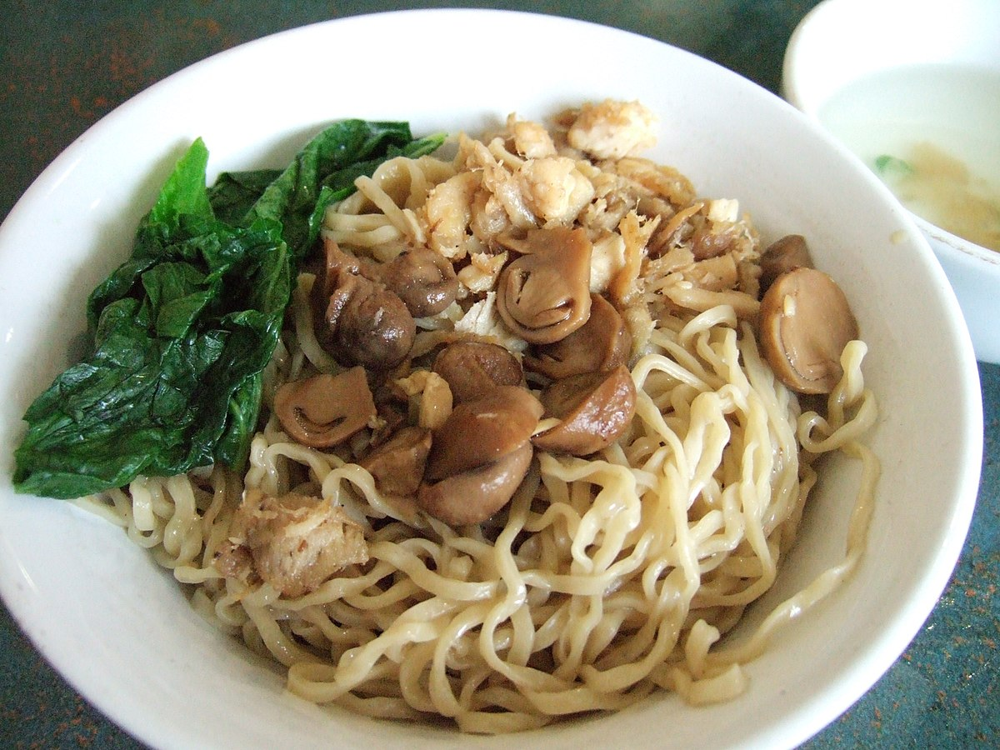

Bakmi ayam atau mie ayam bisa menjadi pilihan sarapan atau makan siang. Satu porsi mie yang terdiri dari mie, ayam dan sayuran bisa menjadi santapan lengkap. Ada karbohidrat, protein dan sayuran.
Ada beberapa sajian bakmi ayam yang populer. Seperti mie goreng Aceh yang dibalut bumbu rempah. Ada juga bakmi ayam Bangka yang diberi topping ayam kecap yang gurih manis. Bakmi goreng Jawa yang mlekoh juga mantap bumbunya.